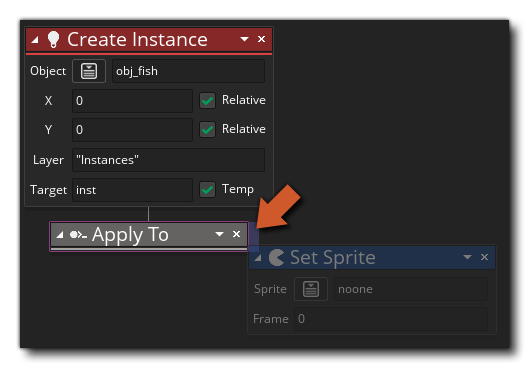

La description
Cette action peut être utilisée pour modifier la portée de l' action pour toutes les autres actions à enchaîner à celle-ci. Comme avec une action si, si vous abandonnez une autre action à la droite de l'action Appliquer à..., elle sera exécutée à partir de l'objet ou de l'instance délimitée. La portée est choisie dans le menu contextuel affiché lorsque vous cliquez sur la petite flèche en haut à droite de l'action, et vous pouvez ainsi indiquer à un ensemble d'objets différent, ou même une seule instance si vous avez l'ID de l'instance, exécuter plusieurs actions avant de continuer avec le code de l'objet actuel.
Notez que pour ajouter des actions dans le bloc "S'applique à", elles doivent être placées sur le côté de l'action, comme indiqué dans l'image ci-dessous:
Ces actions seront désormais exécutées à partir de l'objet ou de l'instance ciblée par le bloc "S'applique à", tandis que les actions supprimées ailleurs seront exécutées après le bloc "S'applique à".
Syntaxe de l'action:

Arguments:
N / A
Exemple:

Le code de bloc d'action ci-dessus vérifie une variable pour voir si elle vaut 100 et si cela change la portée des instances "obj_Player" et leur dit d'exécuter l'action Set Sprite (toutes les instances de cet objet dans la pièce changeront l'image-objet à cette point), avant de continuer à ajouter 1 à la variable dans l'instance exécutant le bloc de code complet.